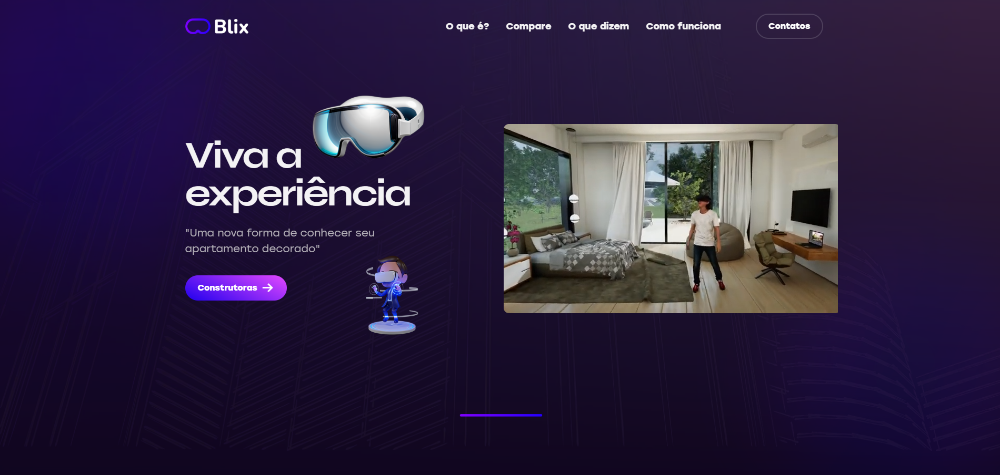

Blix Bluestorm
Desenvolvimento de landing page interativa para o lançamento do jogo Blix, com elementos 3D e animações imersivas.
Visão Geral do Projeto
Blix é um jogo indie de aventura e quebra-cabeças desenvolvido pela Bluestorm Studios. Para o lançamento deste título, o estúdio precisava de uma landing page que não apenas informasse sobre o jogo, mas também proporcionasse uma experiência que refletisse a atmosfera e mecânicas únicas do game. O objetivo era criar uma página web que funcionasse como uma extensão do universo do jogo, captando a atenção dos potenciais jogadores e convertendo visitas em pré-vendas.
Conceito e Design
O design da landing page foi inspirado diretamente na estética visual do jogo, que combina elementos minimalistas com efeitos de luz e partículas. Utilizei uma paleta de cores predominantemente azul e roxa, com acentos em cores neon, refletindo o ambiente digital e futurista do jogo.
A estrutura da página foi planejada para contar a história do jogo de forma progressiva, revelando elementos à medida que o usuário navega, similar à progressão de fases em um jogo. Cada seção apresenta uma mecânica ou aspecto diferente do Blix, com interações específicas que demonstram o conceito.
Desenvolvimento e Tecnologias
O desenvolvimento da landing page envolveu tecnologias avançadas para criar uma experiência web imersiva. Utilizei Three.js para renderizar elementos 3D do jogo diretamente no navegador, permitindo que os visitantes interagissem com modelos de personagens e cenários. As animações foram implementadas com GSAP (GreenSock Animation Platform) para garantir transições suaves e efeitos visuais de alta qualidade.
Um dos principais desafios foi otimizar o desempenho para garantir que a página carregasse rapidamente e funcionasse bem em diferentes dispositivos. Implementei técnicas de carregamento progressivo e otimização de assets para equilibrar a qualidade visual com a performance.
Integração e Funcionalidades
A landing page foi integrada com a API de pré-venda da plataforma de distribuição do jogo, permitindo que os usuários reservassem sua cópia diretamente pelo site. Também implementei um sistema de newsletter para captar leads interessados em receber atualizações sobre o desenvolvimento e lançamento do jogo.
Recursos adicionais incluíram uma galeria interativa de screenshots e concept arts, um player de vídeo para o trailer do jogo, e uma seção de FAQ com informações detalhadas sobre requisitos de sistema e data de lançamento.
Resultados e Impacto
A landing page do Blix superou as expectativas do cliente em termos de engajamento e conversão. Nas primeiras duas semanas após o lançamento, o site registrou mais de 50.000 visitas únicas, com uma taxa de conversão para pré-vendas de 12%, significativamente acima da média do setor para jogos indie.
O tempo médio de permanência na página foi de 4 minutos e 30 segundos, indicando um alto nível de engajamento com o conteúdo interativo. A landing page também gerou cobertura em sites especializados em games, contribuindo para a visibilidade do título antes mesmo do seu lançamento oficial.